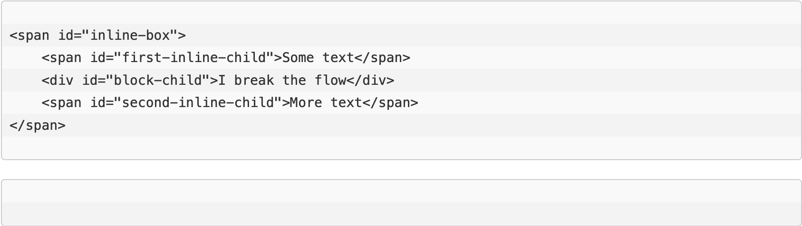

What does it mean to display inline vs inline blocks?
CSS Display And The Basic Box Model.
This article aims at clearing up some of the misconceptions about the CSS display property and the way it affects the box model. It will only take into account the W3 specifications. To avoid blurring you with all sorts of details and exceptions, various browser inconsistencies will be swept and kept under the rug. The purpose is to give you a clear understanding of the matter, so that you shouldn’t be afraid of doing more than changing colors from a stylesheet picked up from who knows what source.
Block Or Inline?
HTML elements can be displayed in two very distinct ways: inline or block. There are many differences between them, but the most important is that inlines flow one after another horizontally, until they have reached the end of the line, at which point they continue to flow on the next line. Blocks on the other hand flow one after the another vertically, and each of them basically occupies an entire line. HTML shows flexibility in allowing elements to flow and this is one of its benefits, as you can insert content in the page at any point and the entire page will rearrange itself to accommodate the changes.
The term flow, or formatting context, refers to the space occupied by inlines or blocks. Each formatting context is responsible for the rendition of its components and it does so according to the principles described above:
- An inline flow distributes its content in lines (useful if you want to display some text).
- A block flow renders each element on a new line (useful for separating the document in sections, like paragraphs).
A block flow also permits a higher degree of control over the placement and size of the contained elements, which is why when creating the layout of a web page, most of the time you will interact with block elements.
The diagram below shows the difference between a block flow with 3 blocks and an inline flow with 3 inlines.

While there are two important ways in which HTML elements are displayed, the display property can take several values, each with its own particularities. Let’s consider the elements with display:inline-block, for example. Not only they participate in an inline formatting context, but they also share some of the characteristics of block elements on the inside (width, height etc). Elements with display:inline-block act as inline on the outside and as a block in the inside. The particularities of inline-block elements are discussed in the section below.
Breaking The Flow
There are two important rules about the display property that children of HTML elements have:
- Children of an element are either all inline or all block.
- Children of an inline element are all inline.
However, if these rules are always followed, then you might ask yourself: How come we can write stuff like a mix of inline (span) and block (div) elements as children of an inline element and they still get properly displayed? The answer is anonymous blocks! HTML is very flexible, meaning that it allows all sort of weird constructs and does its best to make them work.
Let’s review the following example:

In this case, to help preserve the two constraints mentioned above, the browser creates 3 anonymous blocks (think of them as divs) that split the #inline-box span and its content. The first block contains the #inline-box span with the #first-inline-child span as the only child. The second block contains the #block-child div. The third block includes a continuation of the #inline-box span with the #second-inline-child span as the only child. With these anonymous blocks added, both constraints are met: each element has only inline or only block children and each inline element has only inline children.
The browser will interpret the above code in the following way:
A keen eye would notice that the div is no longer contained by the #inline-box span. This might lead to some properties affecting the #inline-box span (such as background-color:red) behaving not exactly as expected.
Breaking the flow can have unexpected consequences, so it is not recommended.
Want to learn more about this: CLICK the button below